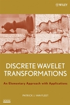

Discrete Wavelet Transformations: An Elementary Approach with Applications

- Introduction - Why Wavelets?
This short essay serves as a brief introduction to the topic - some historical perspectives are given, as well as
motivation for why and how the book constructs and uses discrete wavelet transformations.
- Linear Algebra Basics
2.1 - Vectors, Inner Products, and Norms
2.2 - Basic Matrix Theory
2.3 - Block Matrix Arithmetic
- An Introduction to Digital Images
3.1 - Digital Image Basics
3.2 - Color Images and Color Spaces
3.3 - Qualitative/Quantitative Measures
3.4 - Huffman Encoding
- Complex Numbers and Fourier Series
4.1 - The Complex Plane
4.2 - The Complex Exponential Function
4.3 - Fourier Series
- Filters and Convolution
5.1 - Convolution
5.2 - Filters
5.3 - Convolution as a Matrix Product
- The Haar Wavelet Transform
6.1 - Constructing the Haar Wavelet Transform
6.2 - Iterating the Process
6.3 - Two-Dimensional Haar Wavelet Transform
6.4 - Data Compression and Edge Detection
- Orthogonal Wavelet Transforms
7.1 - Daubechies Filters of Length 4 and 6
7.2 - Daubechies Filters of Even Length
7.3 - Daubechies Transforms - Algorithms
- Orthogonality and Fourier Series
8.1 - Fourier Series and Lowpass Filters
8.2 - Building G(ω) from H(ω)
8.3 - Coiflet Filters
- Denoising Via Wavelet Shrinkage
9.1 - An Overview of Wavelet Shrinkage
9.2 - VisuShrink
9.3 - SureShrink
- Biorthogonal Filters
10.1 - Constructing Biorthogonal Filters
10.2 - Biorthogonal Spline Filters
10.3 - The CDF97 Filter
- Computing Biorthogonal Transforms
11.1 - Computing the Transform
11.2 - Computing the Inverse Transform
11.3 - Symmetry and Image Boundary Effects
- JPEG2000
12.1 - An Overview of JPEG
12.2 - The Basic JPEG2000 Standard
12.3 - Lifting and Lossless Compression
12.4 - Examples
- Appendix A. Basic Statistics
A.1 - Descriptive Statistics
A.2 - Sample Spaces, Probability, and Random Variables
A.3 - Continuous Distributions
A.4 - Expectation
A.5 - Two Special Distributions
{kind=link}